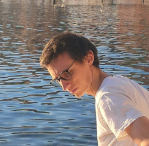

Max Planck Institute for Mathematics, office 407.
E-mail address: lastnamewithnowhitespace [at] mpim-bonn.mpg.de
Hi, my name is Lorenzo. I am currently a postdoc at MPIM, working in the research group of Josh Lam. Previously, I was a research assistant (assegnista) at the Dipartimento di Matematica of the Università degli Studi di Padova, where I worked under the supervision of Matteo Longo. Before that, I was a Ph.D. student of Payman Kassaei and Fred Diamond.
Broadly speaking, my main area of interest is arithmetic geometry. More specifically, I have so far focused on certain aspects of the (algebraic) geometry of special fibres of certain Shimura varieties, with a view towards applications to generalisations of Serre's modularity conjecture.
Sometimes I write down notes to convince myself that I've learnt something. I have a few, but I don't feel like sharing them at the moment. If there is something you need that you think I might have written down, just email me.
Here are some beamer presentations or notes for talks I gave.
Here is a (short) list of my preprints and publications.
My Ph.D. thesis can be found here.
Here is a list of study groups I helped organise.